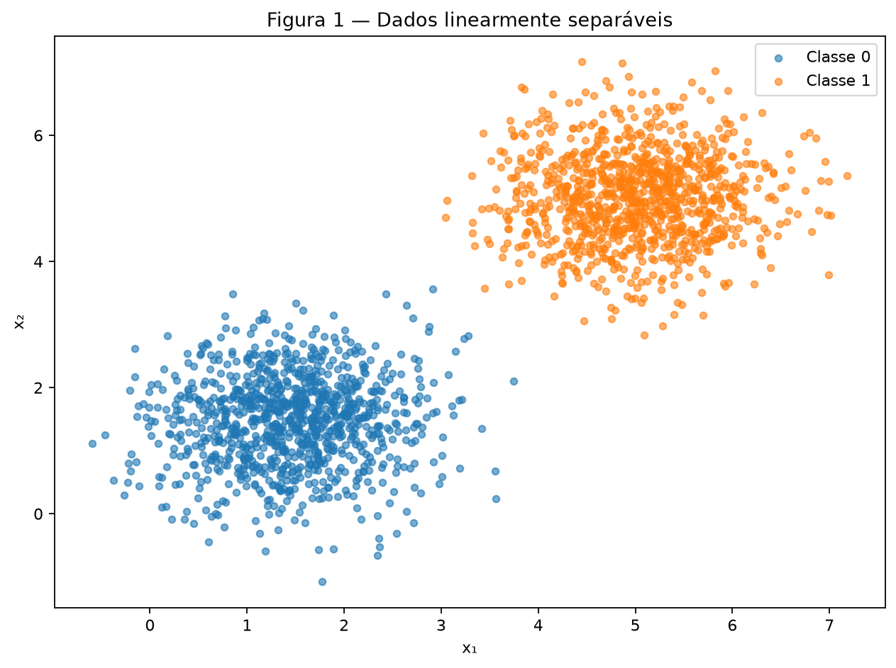
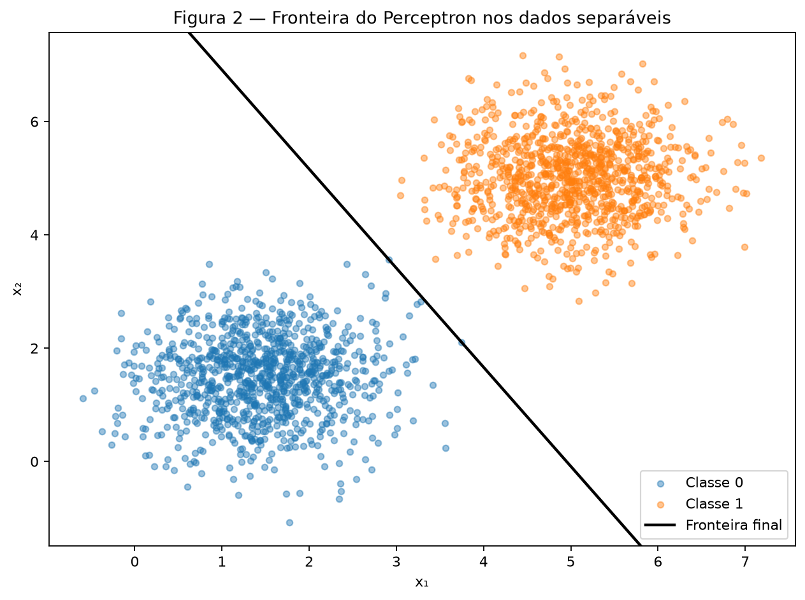
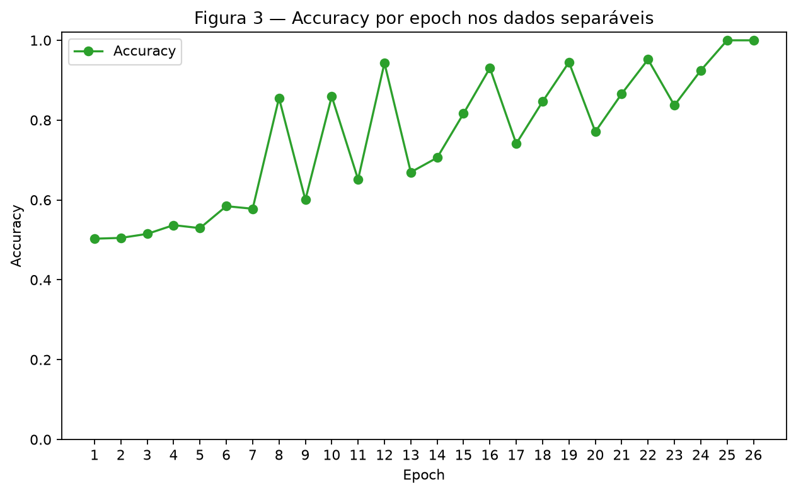
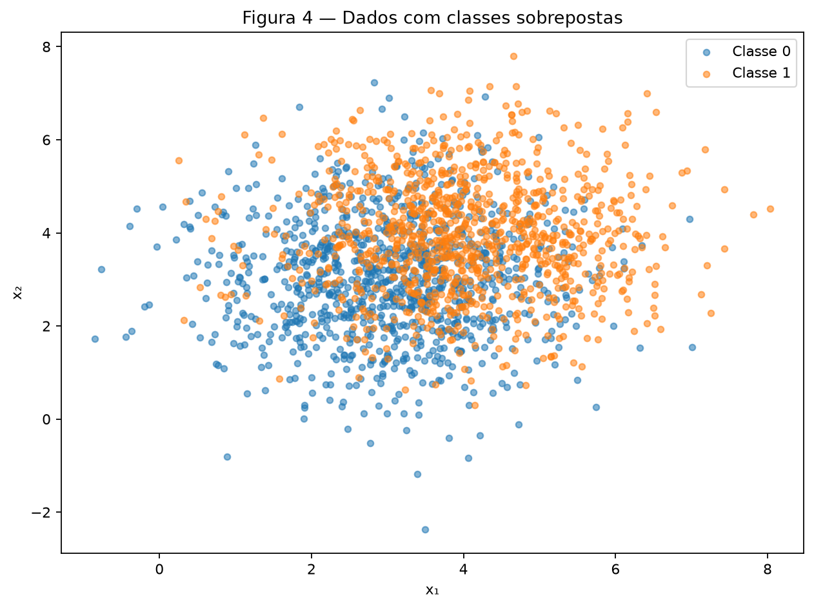
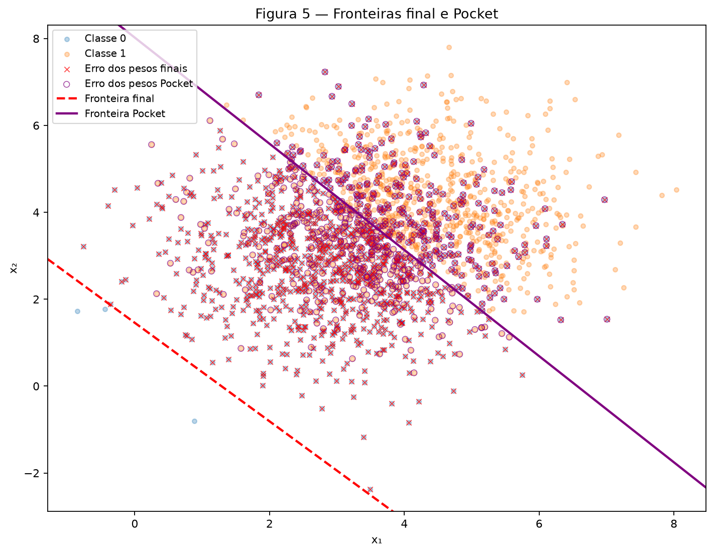
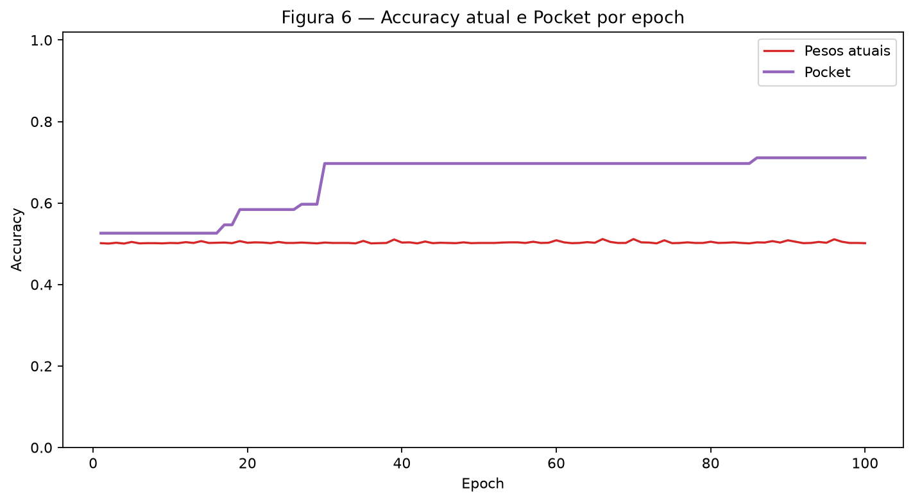

Atividade 2 — Perceptron
Este relatório e suas seis figuras são reproduzíveis pelo script em
code/perceptron.py. A partir da raiz do repositório, execute:
Uma única instância rng = np.random.default_rng(42) é utilizada em
toda a execução. Os pontos não são embaralhados: em cada conjunto, os 1.000
exemplos da classe 0 são seguidos pelos 1.000 exemplos da classe 1.
Exercise 1
A — Generate the data
Foram gerados 1.000 pontos por classe a partir das distribuições Gaussianas
especificadas. A classe 0 tem média \([1{,}5, 1{,}5]\), a classe 1 tem média
\([5,5]\), e ambas usam a matriz de covariância
\(\begin{bmatrix}0{,}5&0\\0&0{,}5\end{bmatrix}\). O empilhamento produz
X com shape (2000, 2) e y com shape
(2000,), contendo somente os labels 0 e 1.

Figura 1 — As médias distantes em relação ao espalhamento produzem duas nuvens visualmente separáveis por uma reta.
B — Implement the perceptron
A previsão usa \(\hat y=1\) quando \(w\cdot x+b\geq0\), inclusive na igualdade, e 0 caso contrário. Para cada erro, os parâmetros são atualizados por:
O treinamento percorre os exemplos explicitamente, conta as atualizações e calcula a accuracy do conjunto completo ao final de cada epoch. A mesma função também mantém cópias dos melhores parâmetros vistos; esses valores Pocket são utilizados no Exercise 2. O código completo executado para os dois exercícios é:
"""Gera os resultados e as figuras da atividade de Perceptron.
Execute a partir da raiz do repositório:
python3 docs/exercises/perceptron/code/perceptron.py
"""
from pathlib import Path
import matplotlib
matplotlib.use("Agg")
import matplotlib.pyplot as plt
import numpy as np
FIGURES_DIR = Path(__file__).resolve().parents[1] / "figures"
CLASS_COLORS = ("tab:blue", "tab:orange")
def generate_data(rng, mean_0, mean_1, covariance, n_samples=1000):
"""Gera duas classes Gaussianas e devolve os pontos e labels 0/1."""
class_0 = rng.multivariate_normal(mean_0, covariance, size=n_samples)
class_1 = rng.multivariate_normal(mean_1, covariance, size=n_samples)
X = np.vstack((class_0, class_1))
y = np.concatenate((np.zeros(n_samples, dtype=int), np.ones(n_samples, dtype=int)))
return X, y
def predict(X, w, b):
"""Aplica o degrau: retorna 1 quando w.x + b >= 0 e 0 caso contrário."""
return (X @ w + b >= 0).astype(int)
def accuracy(X, y, w, b):
"""Calcula a proporção de exemplos classificados corretamente."""
return float(np.mean(predict(X, w, b) == y))
def train_perceptron(X, y, initial_w, eta, max_epochs=100):
"""Treina o Perceptron e guarda no Pocket os melhores parâmetros vistos."""
w = initial_w.copy()
b = 0.0
pocket_w = w.copy()
pocket_b = b
pocket_accuracy = accuracy(X, y, pocket_w, pocket_b)
best_epoch = 0
accuracy_history = []
updates_history = []
pocket_accuracy_history = []
for epoch in range(1, max_epochs + 1):
updates = 0
# O loop explícito mostra uma atualização por amostra, como no enunciado.
for x_i, y_i in zip(X, y):
y_hat = 1 if np.dot(w, x_i) + b >= 0 else 0
error = y_i - y_hat
if error != 0:
w = w + eta * error * x_i
b = b + eta * error
updates += 1
# O Pocket é verificado após cada atualização, não só por epoch.
current_accuracy = accuracy(X, y, w, b)
if current_accuracy > pocket_accuracy:
pocket_accuracy = current_accuracy
pocket_w = w.copy()
pocket_b = b
best_epoch = epoch
accuracy_history.append(accuracy(X, y, w, b))
updates_history.append(updates)
pocket_accuracy_history.append(pocket_accuracy)
if updates == 0:
break
return {
"w": w,
"b": b,
"epochs": len(accuracy_history),
"accuracy_history": accuracy_history,
"updates_history": updates_history,
"pocket_w": pocket_w,
"pocket_b": pocket_b,
"pocket_accuracy": pocket_accuracy,
"pocket_accuracy_history": pocket_accuracy_history,
"best_epoch": best_epoch,
}
def draw_boundary(ax, w, b, label, color, linestyle="-"):
"""Desenha a fronteira w[0] x_1 + w[1] x_2 + b = 0."""
x_limits = np.array(ax.get_xlim())
y_limits = np.array(ax.get_ylim())
if abs(w[1]) > 1e-12:
y_values = -(w[0] * x_limits + b) / w[1]
ax.plot(x_limits, y_values, color=color, linestyle=linestyle, linewidth=2, label=label)
elif abs(w[0]) > 1e-12:
ax.axvline(-b / w[0], color=color, linestyle=linestyle, linewidth=2, label=label)
ax.set_xlim(x_limits)
ax.set_ylim(y_limits)
def main():
FIGURES_DIR.mkdir(parents=True, exist_ok=True)
# Uma única instância é usada em toda a atividade, na ordem abaixo.
rng = np.random.default_rng(42)
# Exercise 1: dados linearmente separáveis.
X1, y1 = generate_data(
rng,
mean_0=np.array([1.5, 1.5]),
mean_1=np.array([5.0, 5.0]),
covariance=np.array([[0.5, 0.0], [0.0, 0.5]]),
)
assert X1.shape == (2000, 2)
assert y1.shape == (2000,)
assert np.array_equal(np.bincount(y1), np.array([1000, 1000]))
fig, ax = plt.subplots(figsize=(8, 6))
for class_id, color in enumerate(CLASS_COLORS):
points = X1[y1 == class_id]
ax.scatter(points[:, 0], points[:, 1], s=18, alpha=0.60, color=color, label=f"Classe {class_id}")
ax.set(title="Figura 1 — Dados linearmente separáveis", xlabel="x₁", ylabel="x₂")
ax.legend()
fig.tight_layout()
fig.savefig(FIGURES_DIR / "figura_1.png", dpi=160, bbox_inches="tight")
plt.close(fig)
initial_w_ex1 = rng.normal(0, 0.01, size=2)
result_001 = train_perceptron(X1, y1, initial_w_ex1.copy(), eta=0.01)
result_1 = train_perceptron(X1, y1, initial_w_ex1.copy(), eta=1.0)
predictions_1 = predict(X1, result_001["w"], result_001["b"])
misclassified_1 = predictions_1 != y1
fig, ax = plt.subplots(figsize=(8, 6))
for class_id, color in enumerate(CLASS_COLORS):
points = X1[y1 == class_id]
ax.scatter(points[:, 0], points[:, 1], s=18, alpha=0.45, color=color, label=f"Classe {class_id}")
if np.any(misclassified_1):
ax.scatter(
X1[misclassified_1, 0], X1[misclassified_1, 1],
marker="x", s=60, linewidths=1.5, color="red", label="Classificado incorretamente",
)
draw_boundary(ax, result_001["w"], result_001["b"], "Fronteira final", "black")
ax.set(title="Figura 2 — Fronteira do Perceptron nos dados separáveis", xlabel="x₁", ylabel="x₂")
ax.legend()
fig.tight_layout()
fig.savefig(FIGURES_DIR / "figura_2.png", dpi=160, bbox_inches="tight")
plt.close(fig)
epochs_1 = np.arange(1, result_001["epochs"] + 1)
fig, ax = plt.subplots(figsize=(8, 5))
ax.plot(epochs_1, result_001["accuracy_history"], marker="o", color="tab:green", label="Accuracy")
ax.set(
title="Figura 3 — Accuracy por epoch nos dados separáveis",
xlabel="Epoch",
ylabel="Accuracy",
ylim=(0, 1.02),
xticks=epochs_1,
)
ax.legend()
fig.tight_layout()
fig.savefig(FIGURES_DIR / "figura_3.png", dpi=160, bbox_inches="tight")
plt.close(fig)
direction_001 = result_001["w"] / np.linalg.norm(result_001["w"])
direction_1 = result_1["w"] / np.linalg.norm(result_1["w"])
# Exercise 2: o mesmo processo de geração, agora com classes sobrepostas.
X2, y2 = generate_data(
rng,
mean_0=np.array([3.0, 3.0]),
mean_1=np.array([4.0, 4.0]),
covariance=np.array([[1.5, 0.0], [0.0, 1.5]]),
)
assert X2.shape == (2000, 2)
assert y2.shape == (2000,)
assert np.array_equal(np.bincount(y2), np.array([1000, 1000]))
fig, ax = plt.subplots(figsize=(8, 6))
for class_id, color in enumerate(CLASS_COLORS):
points = X2[y2 == class_id]
ax.scatter(points[:, 0], points[:, 1], s=18, alpha=0.55, color=color, label=f"Classe {class_id}")
ax.set(title="Figura 4 — Dados com classes sobrepostas", xlabel="x₁", ylabel="x₂")
ax.legend()
fig.tight_layout()
fig.savefig(FIGURES_DIR / "figura_4.png", dpi=160, bbox_inches="tight")
plt.close(fig)
initial_w_ex2 = rng.normal(0, 0.01, size=2)
result_2 = train_perceptron(X2, y2, initial_w_ex2, eta=0.01)
final_predictions = predict(X2, result_2["w"], result_2["b"])
pocket_predictions = predict(X2, result_2["pocket_w"], result_2["pocket_b"])
final_misclassified = final_predictions != y2
pocket_misclassified = pocket_predictions != y2
fig, ax = plt.subplots(figsize=(9, 7))
for class_id, color in enumerate(CLASS_COLORS):
points = X2[y2 == class_id]
ax.scatter(points[:, 0], points[:, 1], s=16, alpha=0.30, color=color, label=f"Classe {class_id}")
ax.scatter(
X2[final_misclassified, 0], X2[final_misclassified, 1],
marker="x", s=22, linewidths=0.8, alpha=0.70, color="red", label="Erro dos pesos finais",
)
ax.scatter(
X2[pocket_misclassified, 0], X2[pocket_misclassified, 1],
marker="o", s=28, facecolors="none", edgecolors="purple", linewidths=0.7, alpha=0.70,
label="Erro dos pesos Pocket",
)
draw_boundary(ax, result_2["w"], result_2["b"], "Fronteira final", "red", "--")
draw_boundary(ax, result_2["pocket_w"], result_2["pocket_b"], "Fronteira Pocket", "purple")
ax.set(title="Figura 5 — Fronteiras final e Pocket", xlabel="x₁", ylabel="x₂")
ax.legend(loc="best", fontsize=9)
fig.tight_layout()
fig.savefig(FIGURES_DIR / "figura_5.png", dpi=160, bbox_inches="tight")
plt.close(fig)
epochs_2 = np.arange(1, result_2["epochs"] + 1)
fig, ax = plt.subplots(figsize=(9, 5))
ax.plot(epochs_2, result_2["accuracy_history"], color="tab:red", label="Pesos atuais")
ax.plot(epochs_2, result_2["pocket_accuracy_history"], color="tab:purple", linewidth=2, label="Pocket")
ax.set(
title="Figura 6 — Accuracy atual e Pocket por epoch",
xlabel="Epoch",
ylabel="Accuracy",
ylim=(0, 1.02),
)
ax.legend()
fig.tight_layout()
fig.savefig(FIGURES_DIR / "figura_6.png", dpi=160, bbox_inches="tight")
plt.close(fig)
# Checagens simples ligam diretamente os históricos aos parâmetros devolvidos.
assert np.isclose(result_001["accuracy_history"][-1], accuracy(X1, y1, result_001["w"], result_001["b"]))
assert np.isclose(result_2["accuracy_history"][-1], accuracy(X2, y2, result_2["w"], result_2["b"]))
assert np.isclose(result_2["pocket_accuracy"], accuracy(X2, y2, result_2["pocket_w"], result_2["pocket_b"]))
assert np.all(np.diff(result_2["pocket_accuracy_history"]) >= 0)
print("=== EXERCISE 1 ===")
print(f"Pesos iniciais: {initial_w_ex1}")
print(f"eta = 0.01: w = {result_001['w']}, b = {result_001['b']:.6f}")
print(f"eta = 0.01: epochs = {result_001['epochs']}, accuracy = {result_001['accuracy_history'][-1]:.6f}")
print(f"eta = 0.01: direção = {direction_001}")
print(f"eta = 1.0: w = {result_1['w']}, b = {result_1['b']:.6f}")
print(f"eta = 1.0: epochs = {result_1['epochs']}, accuracy = {result_1['accuracy_history'][-1]:.6f}")
print(f"eta = 1.0: direção = {direction_1}")
print(f"Atualizações por epoch (eta = 0.01): {result_001['updates_history']}")
print("\n=== EXERCISE 2 ===")
print(f"Pesos iniciais: {initial_w_ex2}")
print(f"Pesos finais: w = {result_2['w']}, b = {result_2['b']:.6f}")
print(f"Epochs = {result_2['epochs']}, accuracy final = {result_2['accuracy_history'][-1]:.6f}")
print(f"Pocket: w = {result_2['pocket_w']}, b = {result_2['pocket_b']:.6f}")
print(f"Accuracy Pocket = {result_2['pocket_accuracy']:.6f}")
print(f"Melhor Pocket encontrado na epoch = {result_2['best_epoch']}")
if __name__ == "__main__":
main()
C — Train and measure
Os pesos foram inicializados em [0,002532, 0,008952], sorteados por
rng.normal(0, 0.01, size=2), e o bias foi inicializado em zero. Com
\(\eta=0{,}01\), o treinamento produziu:
- pesos finais \(w=[0{,}050497,\ 0{,}028872]\);
- bias final \(b=-0{,}250000\);
- 26 epochs até a parada;
- accuracy final de 100,00%.

Figura 2 — A fronteira final separa os 2.000 pontos. Como a accuracy é 100%, não há pontos classificados incorretamente para marcar.

Figura 3 — Accuracy medida no conjunto completo após cada epoch.
D — Analysis
1. Convergência nos dados separáveis. A regra só altera os parâmetros em
uma classificação incorreta. Neste treinamento, as quantidades de atualizações
por epoch foram
[3, 3, 4, 4, 3, 4, 3, 4, 2, 4, 2, 4, 2, 3, 3, 3, 2, 3, 3, 2, 3, 3, 2, 3, 1, 0].
Elas não precisam cair a cada passagem, pois uma correção pode desfazer parte
de outra, mas a tendência é haver menos erros. Na epoch 26, todos os exemplos
já estavam do lado correto da reta e nenhuma atualização foi necessária.
2. Comparação dos learning rates. A comparação foi controlada: os dois treinamentos partiram dos mesmos pesos [0,002532, 0,008952] e mudaram apenas \(\eta\).
| \(\eta\) | Epochs | Accuracy final | \(w/\lVert w\rVert\) |
|---|---|---|---|
| 0,01 | 26 | 100,00% | [0,868123, 0,496349] |
| 1,0 | 37 | 100,00% | [0,867950, 0,496652] |
Com \(\eta=1{,}0\), os parâmetros finais foram \(w=[5{,}870616,\ 3{,}359239]\) e \(b=-31{,}000000\). Os dois vetores têm direções normalizadas muito próximas neste experimento, mas os parâmetros não são simples múltiplos entre si e as fronteiras não são idênticas. Como os pesos iniciais têm magnitude próxima de 0,01, uma atualização com \(\eta=1\) torna a inicialização quase desprezível, enquanto com \(\eta=0{,}01\) ela tem influência relativa maior. Isso altera a trajetória e levou a 37 epochs, em vez de 26.
3. Inicialização em zero. Se \(w_0=0\) e \(b_0=0\), depois de qualquer sequência de atualizações os parâmetros podem ser escritos como:
onde \(e_t=y_t-\hat y_t\). Para duas taxas positivas \(\eta_1\) e \(\eta_2\), supondo a mesma sequência até um passo, temos:
O score do segundo treinamento é o score do primeiro multiplicado pelo fator positivo \(\eta_2/\eta_1\). Seu sinal não muda; portanto, ambos fazem as mesmas previsões, encontram os mesmos erros e preservam a relação no passo seguinte. Por indução, a fronteira e o número de epochs são iguais. A inicialização não nula exigida no item B é o que permite que \(\eta\) tenha efeito além de uma simples mudança de escala.
Exercise 2
A — Generate the data
A mesma função de geração foi reutilizada, mudando apenas os parâmetros. A
classe 0 tem média \([3,3]\), a classe 1 tem média \([4,4]\), e ambas usam
covariância \(\begin{bmatrix}1{,}5&0\\0&1{,}5\end{bmatrix}\). Novamente foram
gerados 1.000 pontos de cada classe, formando X com shape
(2000, 2) e y com shape (2000,).

Figura 4 — A proximidade das médias e o espalhamento maior causam forte sobreposição, de modo que nenhuma reta separa perfeitamente as classes.
B — Train, keeping the best weights
Foi reutilizada a mesma função de treinamento, com \(\eta=0{,}01\) e limite de
100 epochs. Os pesos iniciais, obtidos da mesma sequência do rng,
foram [0,012158, -0,004510], com bias zero.
Os pesos finais são o estado que permaneceu após a última atualização da epoch 100:
- \(w_{final}=[0{,}054484,\ 0{,}048043]\);
- \(b_{final}=-0{,}070000\);
- accuracy final de 50,15%.
Os pesos Pocket são cópias dos parâmetros que produziram a maior accuracy observada após uma atualização:
- \(w_{pocket}=[0{,}010664,\ 0{,}008727]\);
- \(b_{pocket}=-0{,}070000\);
- accuracy Pocket de 71,10%;
- melhor estado encontrado na epoch 86.
O uso de w.copy() é essencial: uma simples atribuição manteria uma
referência ao array atual, e atualizações posteriores também alterariam o que
deveria ter sido guardado no Pocket.
C — Figures

Figura 5 — A linha tracejada vermelha é a fronteira final e a linha roxa é a fronteira Pocket. Cruzes vermelhas marcam erros dos pesos finais; círculos roxos vazados marcam erros do Pocket. Um ponto pode receber os dois símbolos.

Figura 6 — A accuracy atual oscila, enquanto a melhor accuracy acumulada do Pocket nunca diminui.
D — Analysis
1. Diferença entre os pesos finais e Pocket. A fronteira final é
que passa muito abaixo do centro das duas nuvens e classifica quase todos os pontos como classe 1. Por isso sua accuracy é 50,15%, próxima de uma escolha por acaso em classes balanceadas. Em cada erro, o bias muda somente \(\eta=0{,}01\), enquanto cada componente de \(w\) muda por \(0{,}01x_j\). Como as coordenadas têm valores típicos próximos de 3 ou 4 e \(\lVert x\rVert\) fica aproximadamente em torno de 5, a alteração de \(w\) tem efeito maior que a de \(b\). Com os exemplos ordenados por classe, as últimas correções podem empurrar a fronteira para uma posição ruim.
A fronteira Pocket,
passa pela região entre as nuvens e atinge 71,10%, próxima da melhor accuracy esperada para uma reta neste conjunto. O Pocket não impede que os pesos atuais piorem; ele apenas preserva a melhor posição já encontrada.
2. Teorema de convergência. Na Figure 3, a accuracy se estabiliza e a quantidade de atualizações chega a zero. Na Figure 6, os pesos atuais continuam oscilando durante as 100 epochs. O Perceptron Convergence Theorem garante que o algoritmo encontra uma solução em um número finito de atualizações quando os dados são linearmente separáveis. O Exercise 2 viola exatamente essa hipótese: há pontos das duas classes na mesma região, então toda reta deixa exemplos do lado incorreto. Sempre resta algum erro capaz de provocar outra atualização.
3. Mais epochs e menor learning rate. Acrescentar epochs apenas prolonga a sequência de correções incompatíveis: corrigir um ponto pode voltar a errar outro, pois não existe uma reta perfeita. Diminuir \(\eta\) reduz o tamanho de cada passo e pode mudar a trajetória quando a inicialização é não nula, mas não muda a geometria dos dados nem cria uma fronteira separadora. Assim, nenhuma das duas mudanças garante convergência. O Pocket é útil porque mantém a melhor fronteira observada, mesmo sem eliminar a limitação do modelo linear.
Results summary
| # | Quantity | Value |
|---|---|---|
| 1 | Exercise 1 — final \(w\) and \(b\) | \(w=[0{,}050497,\ 0{,}028872]\), \(b=-0{,}250000\) |
| 2 | Exercise 1 — epochs to convergence | 26 |
| 3 | Exercise 1 — final accuracy | 100,00% |
| 4 | Exercise 1 — epochs and final accuracy with \(\eta=1{,}0\) | 37 epochs; 100,00% |
| 5 | Exercise 2 — final \(w\) and \(b\) | \(w=[0{,}054484,\ 0{,}048043]\), \(b=-0{,}070000\) |
| 6 | Exercise 2 — accuracy of the final weights | 50,15% |
| 7 | Exercise 2 — accuracy of the pocket weights | 71,10% |
| 8 | Exercise 2 — epoch at which the pocket best occurred | 86 |